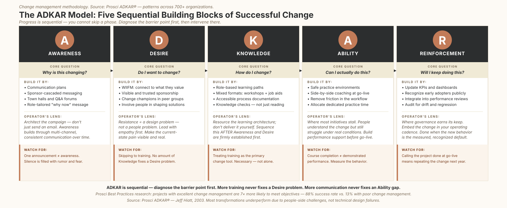

In 2013 application teams at Verizon waited more than 17 weeks for compute infrastructure. The asset lifecycle behind that wait ran across two SVP organizations and tens of thousands of servers, and nobody had ever mapped it end to end. When I decomposed it, the delay was in 110 handoffs between teams rather than in any individual step.
It is understandable why the people who owned the handoffs might resist a redesign, because it could have been interpreted as a verdict on their performance. Before the Work Out convened, I met each resistant stakeholder one-on-one to hear the pain the process caused them and to invite them to help design the fix. We presented the 110 handoffs as ownership divided between two organizations, not as poor performance by either one. In ADKAR terms that was Desire work, and it was a planned step in the change plan.
The Work Out we co-facilitated reached from the data center floor to the SVPs and produced seven multi-year transformation solutions, all of them approved. Asset acquisition went from over 17 weeks to under three.
The resistance in that program was a Desire problem, and Prosci says Desire "is typically the most challenging ADKAR element for organizations." If we had answered it with the intervention most programs reach for first, more training, we would have spent the effort on the wrong building block. Prosci's research suggests that happens often.
Much of the friction, stalled adoption and failed implementation in change programs is self-inflicted. Often the change strategy was sound and the response to resistance was wrong. Teams applied the right interventions to the wrong problems, or the right interventions at the wrong time.
I call this the prescription trap: treating every kind of resistance with the same remedy before diagnosing where people are stuck.
The Framework
Most People Treat ADKAR as a Checklist
The Prosci ADKAR® Model was created by Prosci founder Jeff Hiatt, whose research for The Perfect Change (2000) covered over 700 companies over a four-year period, and it has been in use for 25 years. Most of us in change work have seen it reduced to five boxes on a slide, explained as "the five things people need to change," and then set aside while the project team builds training decks.
ADKAR was built as a diagnostic framework. Its value is in the order of the five building blocks, and in what that order tells us about where a program is breaking down.
Its premise is that organizational change only happens when individuals change, one person at a time, each making a personal decision to move from today's way of working to tomorrow's. The model describes five building blocks every person must move through, in order:
| A: Awareness | Of the need for change: the why |
| D: Desire | To participate and support the change: the want |
| K: Knowledge | Of how to change: the how |
| A: Ability | To demonstrate the required skills and behaviors: the can |
| R: Reinforcement | To sustain the change over time: the keep |
The order matters. A person cannot develop Desire without first having Awareness, and Knowledge does little for someone who has no Desire to use it. Ability without Reinforcement fades, and the organization drifts back to the old way.
Why → Want → How → Can → Keep
When a change program stalls, at least one of these building blocks is missing for some group of people. Our first job, before designing any intervention, is to find which one.
Core Concept
The Barrier Point: Where People Are Stuck
Prosci defines the barrier point as "the first ADKAR element that is insufficient and impedes change progress." Finding it tells us what kind of intervention is needed, which makes it more useful than any single intervention we could design. Each building block needs a different response:
- An Awareness barrier needs communication: the right messages through the right channels, repeated.
- A Desire barrier needs motivation: involvement, visible sponsorship, and acknowledging what people stand to lose as well as what they stand to gain.
- A Knowledge barrier needs learning that is role-specific, well sequenced and practical.
- An Ability barrier needs practice and support: coaching, hands-on repetition and performance support.
- A Reinforcement barrier needs governance: updated metrics, accountability, recognition, and policy changes that make the new way the standard.
These interventions are not interchangeable, yet most organizations default to one of them, training, wherever the problem is.
Pattern Recognition
Three Mismatches That Cost the Most
Three mismatches show up again and again in change programs. Recognizing them is half the diagnostic work.
1. The Training-for-Desire Trap
People attend training and pass the assessments, but adoption after go-live is low. Managers report "resistance," and the project team schedules mandatory refreshers and adds follow-up modules.
A Desire barrier. These employees know about the change and understand it, and they do not want to do it. They may distrust the leaders driving it, or see the new way as harder rather than better. They may have been left out of the design and feel the change is being imposed rather than led.
Training does not address any of that. Prosci finds that "many organizations offer training too soon," before people have Awareness and Desire, and that this creates barriers that lead to resistance because employees are not ready to learn. More training can harden the resistance, because it signals that leadership is not listening to the problem people have raised.
2. The Communication-for-Ability Gap
Surveys show high Awareness and Desire, and people say they are on board. After go-live, performance drops, workarounds multiply and errors increase. The response is more town halls, more update emails and a "refreshed communications plan."
An Ability barrier. Prosci puts it this way: "There's often a gap between knowing how to do something and being able to do it effectively." These people know what to do and want to do it, but they cannot do it consistently under live conditions: time pressure, competing priorities, and production systems that behave differently than the training sandbox. More communication does not help someone who has not had enough practice.
This barrier is hard to see before go-live, because everything looked fine in training.
3. The Announcement-as-Awareness Error
The project team moves fast. Training is complete and go-live is on schedule. Three months later, two-thirds of the affected population is still using the old process, and the project team says "they just aren't getting it."
Awareness was announced but never built. An all-hands was held, a one-pager was emailed, and leadership assumed that was enough. In Prosci's research, the top reason for employee resistance is "lack of awareness of the reason for the change."
Awareness comes from repeated, role-relevant communication through several channels over time. When it is missing, people supply their own reasons, and Prosci lists what follows: "confusion, misinformation, low morale and costly resistance." Building Awareness has to be planned into the program from the start.

The ADKAR Model: five building blocks in sequence. Find the barrier point first, then intervene there.
The Prescription Map
Five Barriers, Five Different Prescriptions
| Barrier Point | Diagnostic Signal | Right Intervention Category |
|---|---|---|
| Awareness | "I don't understand why this is changing." | Communication plans, sponsor cascades, manager-led Q&A sessions |
| Desire | "I understand it. I just don't want to." | WIIFM design, change champion networks, visible and trusted sponsorship |
| Knowledge | "I want to, but I don't know how." | Role-based training, learning architecture, job aids |
| Ability | "I know how. I just can't do it consistently." | Coaching plans, practice environments, performance support infrastructure |
| Reinforcement | "I was doing it. But I drifted back." | KPIs, recognition, governance forums, policy and SOP updates |
Before we design a single intervention from this table, we need to know, by role and by population, where people are in the sequence. A single ADKAR score for "the organization" hides the fact that different groups are at different barrier points at the same time. A communications plan does nothing for the team stuck at Ability, and coaching is wasted on a team that still lacks Desire.
The Operator's Lens
Why This Matters More in Operational Environments
The workforce knows the process better than anyone on the project team. Long-tenured operations staff have years of institutional knowledge. When they push back on a change, they are often drawing on that knowledge: they have already run the new process through the edge cases in their heads and found failure modes the project team has not seen yet. Labeling that "resistance" and scheduling more training is wrong analytically and expensive operationally. Prosci's advice for Desire is to "involve employees in shaping the change, which builds a sense of ownership and commitment." In the ITAM program, the people who would have to live in the new model helped build it, and the seven solutions that came out of the Work Out were approved by both SVP organizations.
Go-live means production impact. In an office ERP rollout, an Ability barrier produces a spike in help desk tickets. In an operation, it means a missed SLA, a compliance incident, a safety near-miss or a customer escalation. That is why performance support has to be in place before go-live.
Change rarely touches only one dimension. Process excellence programs usually combine workflow redesign, systems change and new behaviors, and they affect each role differently. A procurement analyst may have full Awareness but weak Desire. A field technician may have strong Desire and still lack Knowledge because the training was not written for that role. The diagnosis has to be done for each segment.
Measure where the variation is. In Prosci's ADKAR assessment each building block is scored from 1 to 5, and a score of 3 ("neutral") or lower is a barrier. Applied by role, it turns the diagnosis from a conversation into data. It is the same order of work as a DMAIC project, where Measure and Analyze come before Improve, and the scores tell us where to invest.
What This Series Covers
The next five articles take one building block each. They skip the definitions and cover the program design that makes each building block work at scale. Each article stands on its own, and if you are designing a program from scratch, read them in order.
- Part 1: Awareness Campaign architecture, manager toolkits, roadshows, and why one announcement does not equal awareness.
- Part 2: Desire The WIIFM design process, resistance as a design problem, change champion networks, and how to engineer constructive dissatisfaction with the status quo.
- Part 3: Knowledge Learning architecture, role academies, microlearning libraries, and why most training programs are delivered in the wrong sequence.
- Part 4: Ability Where initiatives stall, performance support infrastructure, floor-walker models, and building demonstrated capability before go-live.
- Part 5: Reinforcement Governance councils, reinforcement calendars, process mining for adoption compliance, and why the change is not done when go-live ends.
Where have you seen a program answer a Desire problem with more training? I'm curious what the team noticed first, and what turned it around.
Continue with Part 1: Awareness: How to Build a Campaign, Not Just Send an Email →
Source references: Prosci, The Prosci ADKAR® Model for Organizational Change Success (eBook): avoidable resistance and top reasons for resistance (Prosci Research Hub, 2023), Desire as the most challenging element, training offered too soon, 25 years of use. Prosci, The 5 Building Blocks of Individual Change webinar slides (2021, prosci.com): Jeff Hiatt's research for The Perfect Change, the barrier point definition, 1-5 element scores. Prosci, An Introduction to Change Management: initiatives with excellent change management are seven times more likely to meet objectives than those with poor change management (88% vs. 13%; Prosci Research Hub, 2023).